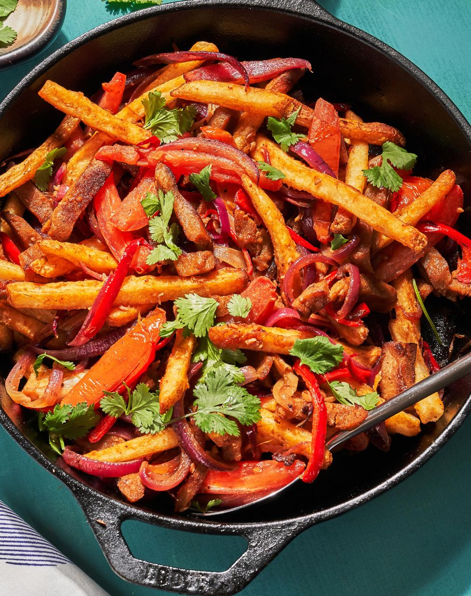

Seitan Lomo Saltado

Description
Lomo Saltado is a very popular Peruvian dish with origins in chifa cuisine. Chifa is the culinary mashup developed by Chinese-Peruvian immigrants who applied Cantonese techniques and ingredients to Peruvian foods.
This dish is the epitome of this amazing fusion of culinary worlds. The recipe takes aji amarillo (Peruvian chiles) and papas fritas (french fries) and prepares them in the style of a Cantonese stir fry.
Though typically made using beef, I see this as the perfect way to sub in seitan (or tofu or any vegan protein) to create a delicious, fully vegan meal!
We love using fresh made fries for this, but if you want to save on time and cleanup, oven fries would work great too.
Ingredients
- 2 tbsp. vegetable oil, plus more if needed
- 1 lb. seitan, cut in strips
- 1 medium red onion, sliced
- 2 aji amarillo or fresno chiles, seeded and sliced
- 2 roma tomatoes, cored and sliced
- 3 cloves garlic, minced
- Kosher salt
- Freshly ground black pepper
- 1/4 c. soy sauce
- French Fries
- 2 tbsp. cilantro, chopped
Steps
- In a skillet over high heat, heat oil until it just starts to smoke. Add seitan and sear, stirring occasionally, for 4 to 5 minutes, or it begins to caramelize.
- If there is no visible oil in the pan, add about a tablespoon more before adding the red onion and aji amarillo (or fresno chile). Cook, tossing constantly, for 3 minutes, until onions have just started to soften.
Add tomatoes and cook for an additional 2 to 3 minutes, tossing them with the rest of the ingredients. Make sure the tomatoes have not cooked down fully and still retain a bit of bite. Add garlic, a good pinch
of kosher salt and a couple cracks of black pepper and let cook for another minute.
- Reduce heat to medium and add soy sauce and vinegar, stirring until seitan and veggies are fully coated with sauce. Let sauce reduce for 1 to 1 ½ minutes, or until it has thickened slightly.
- Remove skillet from heat and add fries, tossing until they have been fully incorporated. Garnish with cilantro and serve.